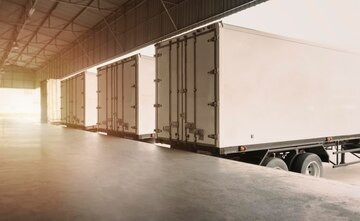
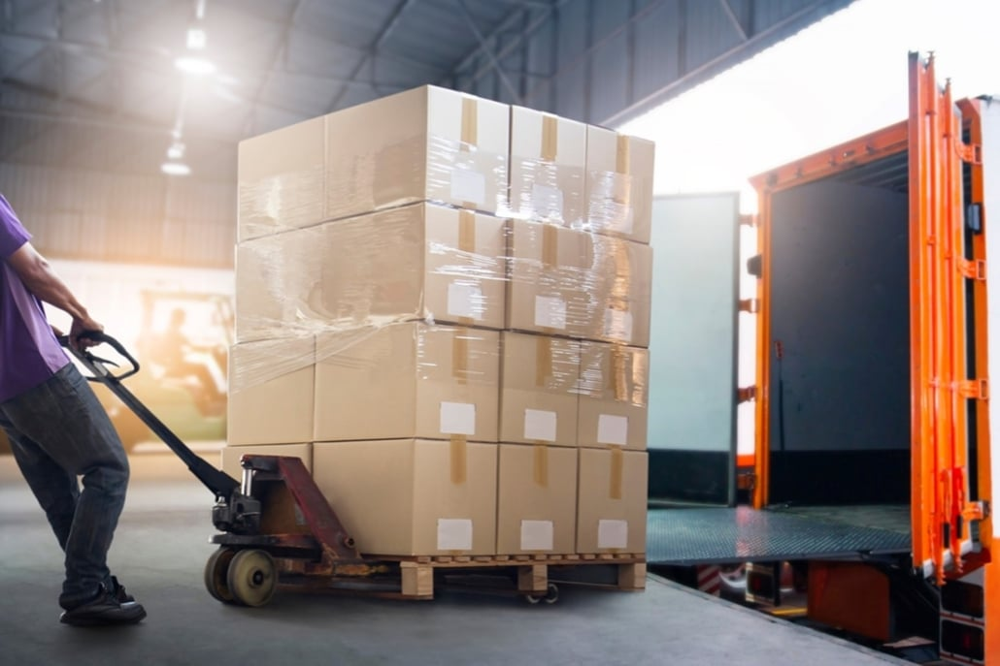

Trucking Master's L.L.C
3531705
ABOUT US
Trucking Masters L.L.c provides a freight services to both commercial and residential customers throughout The United States. We are a part of a reliable and efficient supply chain. Our rates and comprehensive services make's US the right choice for all of your freight transport needs. Every manufacturing, distribution and service company needs a timely delivery of goods by trucks.
Trucking Masters L.L.C locations in the western region allows us to handle all of your pick-ups and deliveries. We service all of western region on a daily basis.
INFO
Our team behind the scenes are just as important as our drivers on the road. They are working as a team to provide the acuracy that mantaine our competitive advantage. communications is essential in the trucking industry, we are always working to increasing our information network to keep up with the newer technologies. we have our Dispatchers and Customer Service Representatives for specific territories, so they really get to know your needs. You can count on every aspect of Trucking Masters' equipment to be in the best possible condition. Our skilled mechanics have the knowledge, experience, and facilities to keep our equipment running smoothly, assuring the safety and delivery of your loads. We hire only the best drivers with strict qualifications. They make Trucking Masters l.l.c one of the safest truck fleets on the road today.
Our Mission
Trucking Masters strive to provides quick and efficient in class tranportation services to our customer. We offer cost effective, environmentally friendly and problem-solving solutions that assist our customers in achieving their needs.